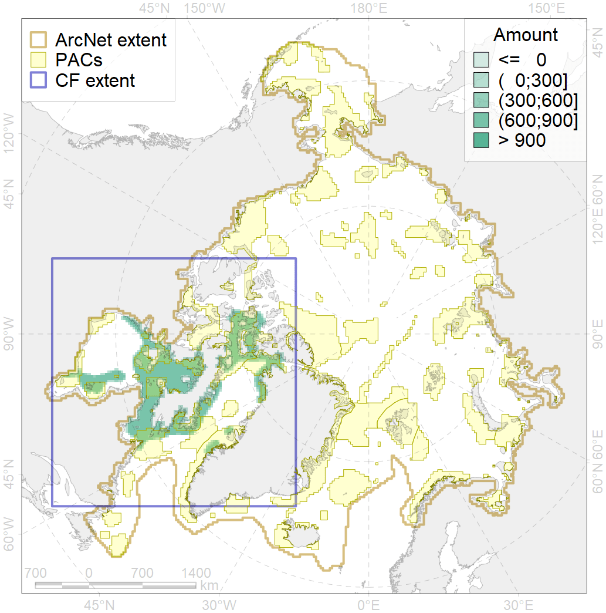
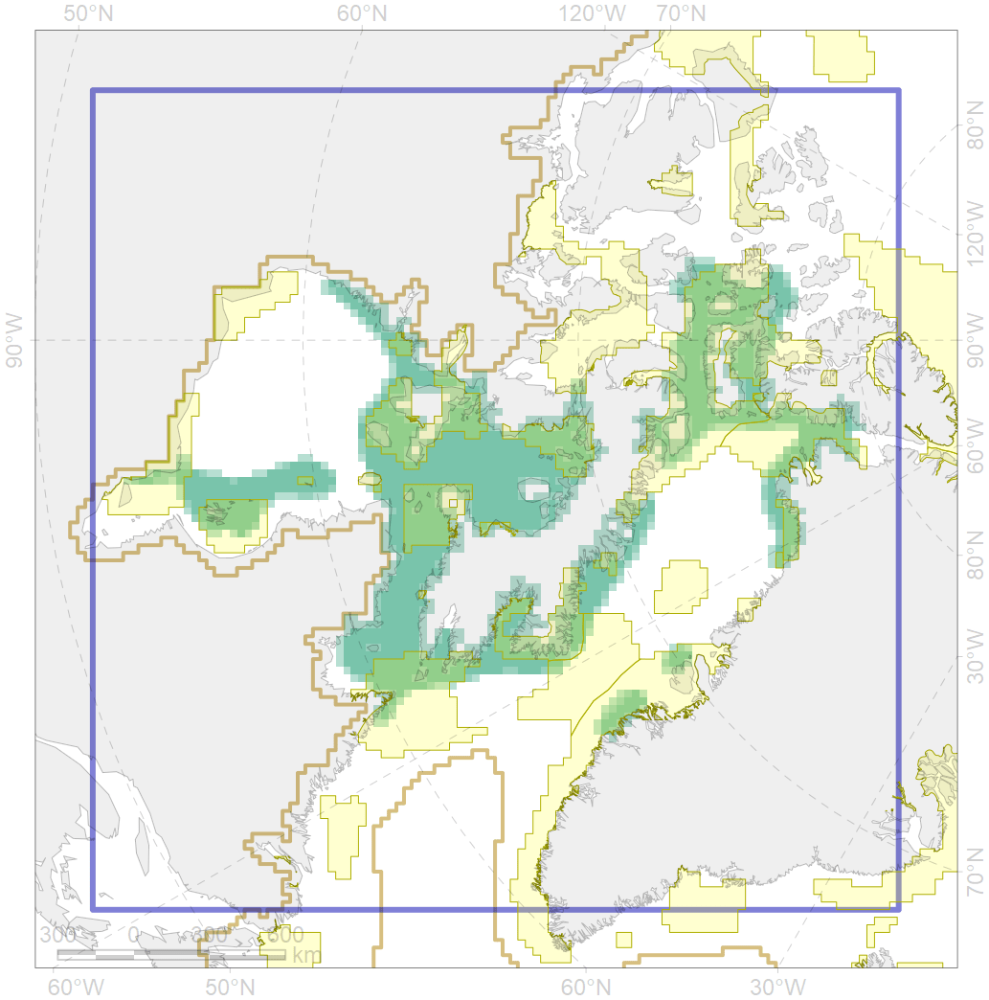

1002

| CF code | 1002 |
| CF name | Atlantic Walrus Summer Distribution in Canada |
| Time Period | 1995-2010 |
| Source(s) | https://arctic.journalhosting.ucalgary.ca/arctic/index.php/arctic/article/download/26/160 http://www.dfo-mpo.gc.ca/Library/341178.pdf https://nammco.no/topics/atlantic-walrus/#1478699758629-7da126c3-48a6 |
| Seasonality | June - September |
| Depth Horizon | 0-200m |
| Methodology | Compilation, expert input, boat/ plane surveys, tagging, TEK |
| Use Restrictions | Open source |
| Author Name | Maria Solovyeva |
| Notes | |
| Scenario’s Target | 0.336 |
| Target Achievement | 0.492 (Scenario: 146.5%) |
| PAC | Share of the Total Amount within the PAC | Share of the Target Achievement for the ArcNet | PAC’s Contribution to the Target Achievement |
|---|---|---|---|
| 44 | 2.0%2.2% | 5.8%6.1% | 3.9%4.2% |
| 45 | 0.5%0.8% | 1.3%2.0% | 0.9%1.3% |
| 46 | 3.1%3.6% | 8.4%9.5% | 5.8%6.5% |
| 49 | 1.3%1.4% | 3.4%3.4% | 2.3%2.3% |
| 50 | 0.3% | 0.9% | 0.6% |
| 51 | 3.8%4.6% | 10.9%13.1% | 7.4%9.0% |
| 52 | 13.1%13.4% | 37.5%38.3% | 25.6%26.1% |
| 65 | 0.1%0.1% | 0.3%0.3% | 0.2%0.2% |
| 66 | 3.6%3.7% | 9.3%9.5% | 6.3%6.5% |
| 67 | 5.8%5.9% | 15.2%15.4% | 10.4%10.5% |
| 68 | 0.5%0.5% | 1.1%1.1% | 0.8%0.8% |
| 70 | 0.9%0.9% | 2.7%2.7% | 1.8%1.8% |
| 71 | 2.7% | 7.7% | 5.3% |
| 72 | 0.3%0.5% | 0.7%0.7% | 0.4%0.5% |
| 73 | 4.1%4.1% | 10.9%11.0% | 7.5%7.5% |
| 74 | 0.1%0.2% | 0.3%0.5% | 0.2%0.3% |
| 75 | 0.0%0.0% | 0.0%0.1% | 0.0%0.0% |
| 76 | 4.8%4.8% | 13.0%13.1% | 8.8%9.0% |
| inner | 47.3%49.8% | 129.3%135.5% | 88.2%92.5% |
| outer | 52.7%59.1% | 17.3%33.2% | 11.8%22.7% |
| † supplement values are for area consistence whereas principal values are for Accenter compatible gridded stats |